MSc Artificial Intelligence Research · Computer Vision · PyTorch
Efficient Neural Network Architectures for Vehicle Type Classification
Developed and evaluated neural network architectures for vehicle type classification using the VTID2 image dataset. The evaluated architectures included an MLP, a standard CNN, an efficient depthwise-separable CNN, and an efficient CNN with Squeeze-and-Excitation.
Public Repository · Archived on Zenodo (DOI)
Research highlights
Source: public project summary. Efficiency and Macro-F1 comparisons refer to the efficient CNN against the standard CNN in the reported evaluation protocol.
System overview
- Author
- Mohammed Mahyoub
- Problem
- A content-based dataset audit identified 2,425 redundant exact copies among 4,356 valid images, leaving 1,931 exact-unique images.
- Method
- Compared conventional and leakage-controlled evaluation protocols, and examined the trade-off between classification performance and computational efficiency.
- Result
- The efficient CNN achieved substantial reductions in trainable parameters and MACs while maintaining competitive Macro-F1. Grad-CAM was used to analyse model attention and the influence of preprocessing and letterbox padding.
Reporting efficiency without hiding evaluation assumptions
The public research compares an MLP, a standard CNN, a depthwise-separable efficient CNN and an efficient CNN with Squeeze-and-Excitation. The reported efficient-CNN comparison gives 87.24% fewer parameters, 81.67% fewer MACs and a mean Macro-F1 difference of 0.0150. These are existing public summary values, not new training results.
The data audit reports 4,356 valid images and 1,931 exact-unique images after 2,425 redundant copies are identified. An image-level split can place identical content on both sides of an evaluation boundary. A defensible explanation therefore puts duplicate grouping and split identity before architecture comparison. Protocol changes in data composition and training settings also mean a conventional-versus-controlled gap is not a causal estimate of leakage.
Parameter count, MACs and measured latency describe different costs. Reduced arithmetic does not guarantee the same latency improvement on every device; batch size, input shape, precision, warm-up and the execution environment affect a timing measurement. The available public figures do not establish a deployment benchmark or an absolute latency number.
Grad-CAM provides a class-related visual explanation, not proof that a prediction is causally correct. A useful figure would show input, predicted/true class and heatmap together, with attention to vehicle regions and letterbox padding. The executed notebook is now public; its training curves, classwise confusion matrices and actual Grad-CAM panels appear in the source gallery below. No generated heatmap is substituted for an executed model output.
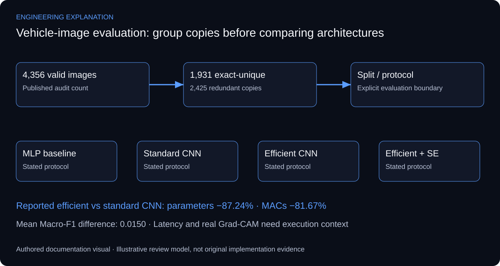
Review scenarios and expected evidence
These scenarios specify what evidence would support a review. They do not report additional completed tests.
| Review area | Method | Evidence to inspect |
|---|---|---|
| Data integrity | Review duplicate groups and split identity | No identical content crossing the stated boundary |
| Classification | Review classwise and Macro-F1 results | Protocol, class support and uncertainty context |
| Efficiency | Separate parameters/MACs from measured latency | Input shape and execution environment stated |
| Explainability | Inspect real model-generated attention | Input, class and preprocessing shown together |
Technical references and provenance
Primary references support the engineering explanation, not claims about this project's undocumented configuration or results.
Reported figures come from the executed notebook in the public repository. Explanatory diagrams are labeled as such.
Engineering rationale
Data quality before accuracy
The content audit found 4,356 valid images, of which 2,425 were redundant exact copies. The remaining 1,931 exact-unique images make clear why evaluation design matters: copies can cross an image-level train/test boundary and inflate apparent generalisation.
Architecture comparison
The MLP establishes a non-convolutional baseline. A standard CNN is compared with a depthwise-separable CNN and a version with Squeeze-and-Excitation. The comparison considers Macro-F1 together with trainable parameters, multiply-accumulate operations and batch-one inference latency.
Interpretation of published results
The public LinkedIn summary reports 87.24% fewer parameters and 81.67% fewer MACs for the efficient CNN, with a mean Macro-F1 difference of 0.0150. Conventional and controlled protocols also differ in data composition and training settings; their performance gap is a diagnostic comparison, not a causal estimate of leakage.
Explainability and access
Grad-CAM investigates attention to vehicle regions and preprocessing padding. Padding attention stayed below the geometric null; however, padding geometry itself encodes aspect ratio, so it is not a fully neutral artefact. The notebook and source code are available in the public repository; the VTID2 dataset itself is not redistributed.
Evidence and validation
Review the documented implementation against these validation topics; measured results are shown only where provided by the source.
- Duplicate audit and split identity checks
- Model/protocol configuration
- Classwise results and uncertainty
- Latency environment and Grad-CAM examples
Source gallery
Figures exported from the executed notebook in the public repository. Each caption states what the output shows.

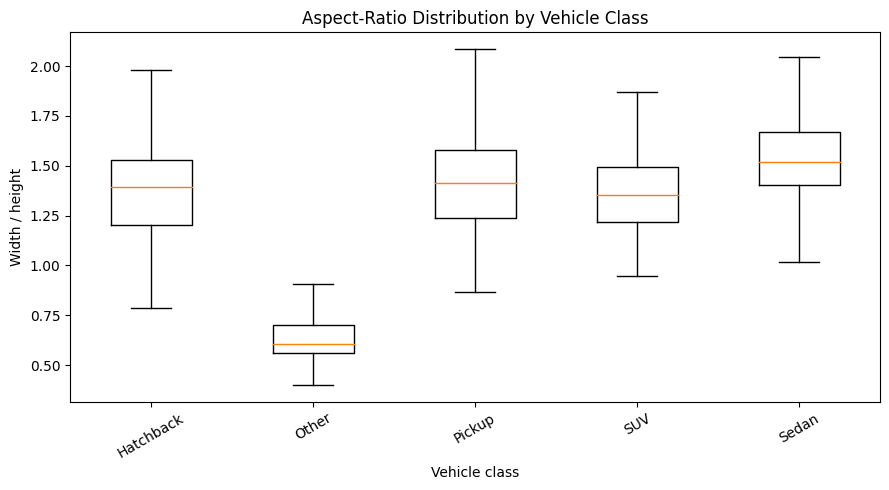

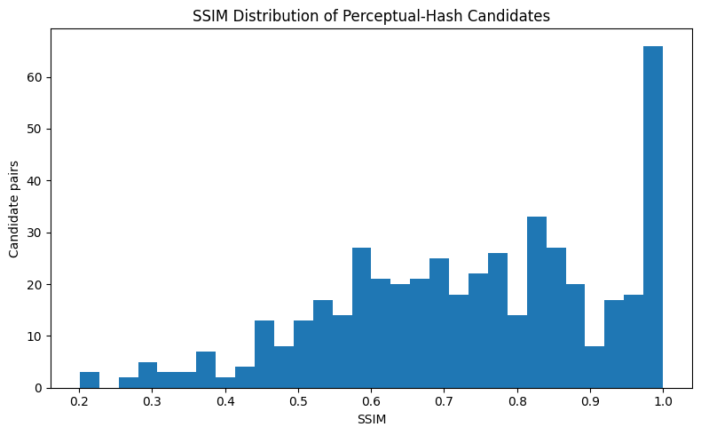

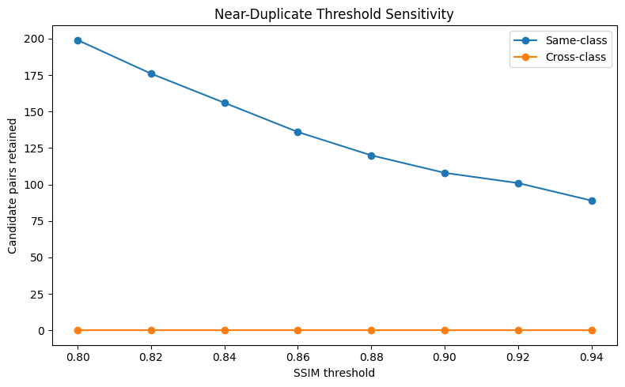

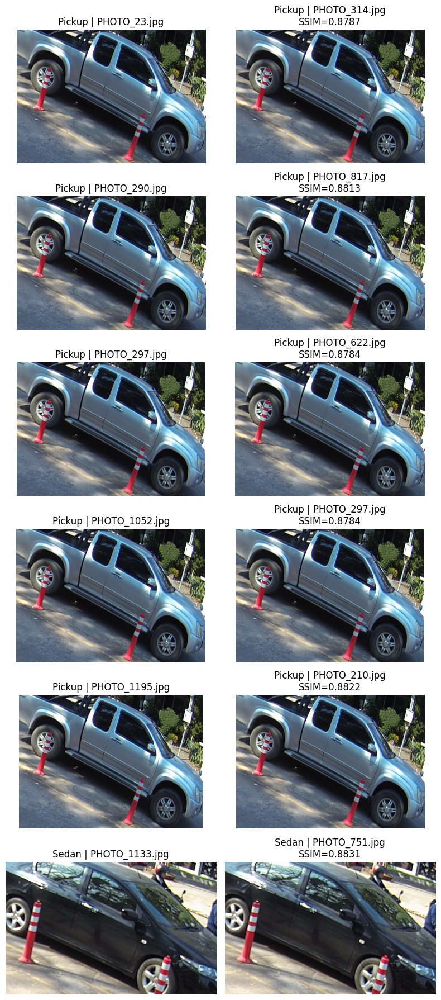

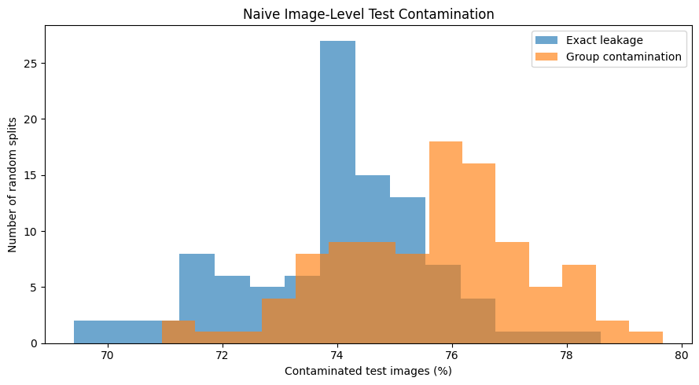

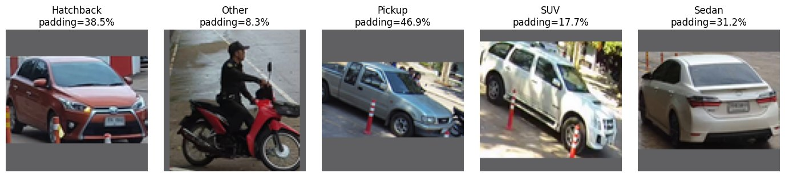

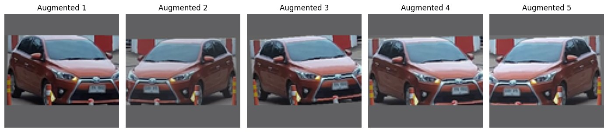

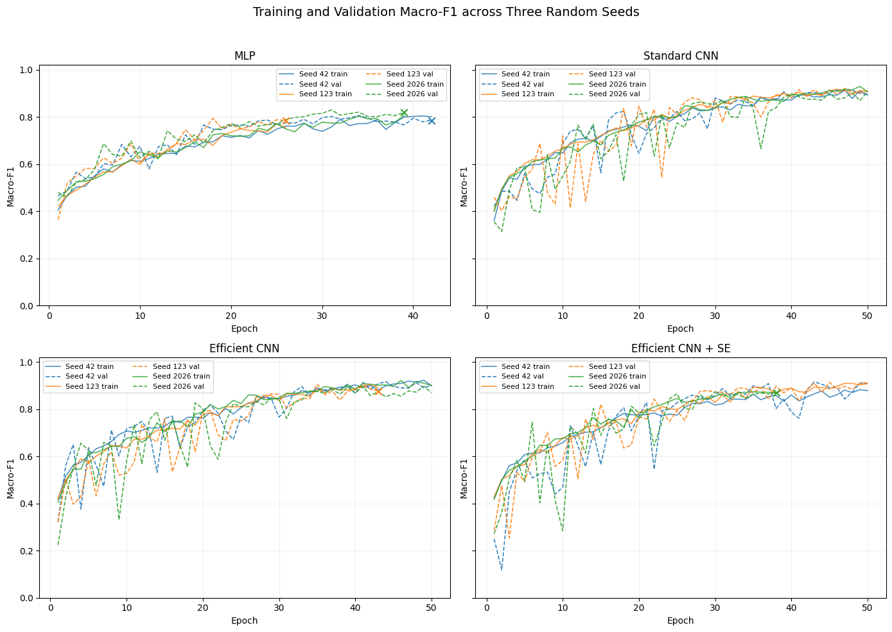

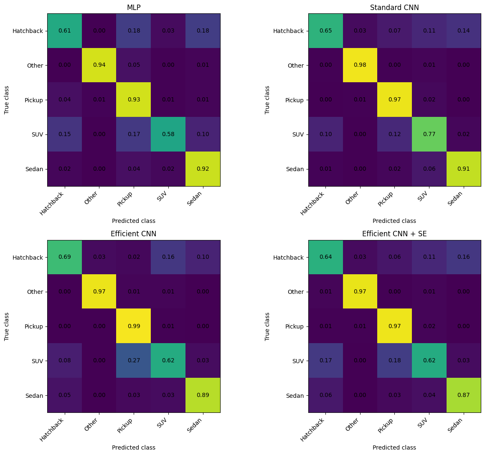

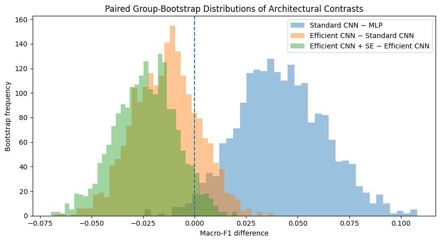

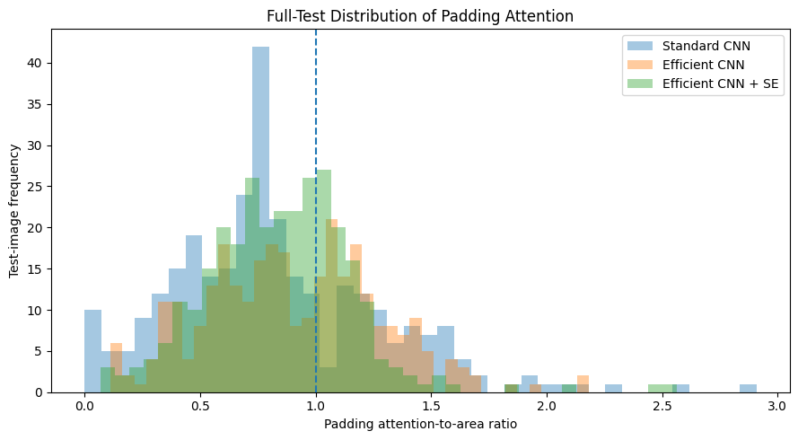

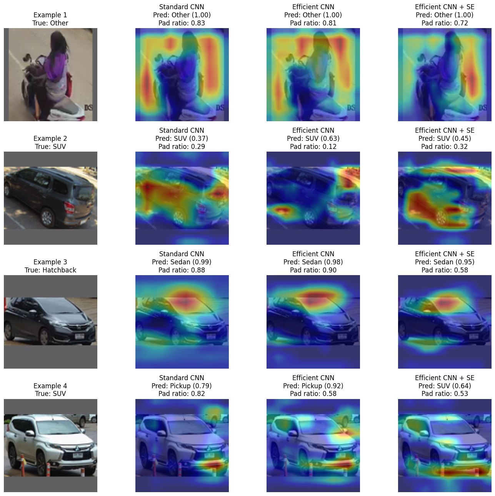